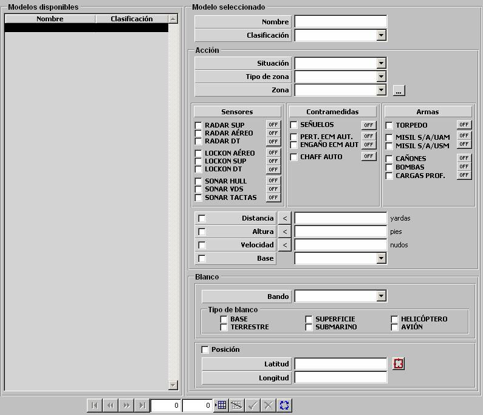

Acciones

Mediante esta tabla se parametrizan las Acciones que pueden ser incluidas dentro de una Programación de Acciones, la cual puede ser asignada a unidades.
La naturaleza de la Acción se especifica parametrizando:
Los Blancos contra los que se efectúa la Acción, se especifican parametrizando:
Ubicación Geográfica:
Situación: Este parámetro determina si la unidad debe dirigirse o salir de una determinada zona o una ruta. Puede tomar los siguientes valores:
Tipo de Zona: Este parámetro determina el tipo zona geográfica o ruta a la que la unidad debe dirigirse o salir de ella, según lo indicado en el parámetro anterior. Puede tomar los siguientes valores:
Zona: Este parámetro determina la zona geográfica o ruta a la que la unidad debe dirigirse o salir de ella, según lo indicado en el parámetro Situación. Podrán ser seleccionadas de entre las Zonas ROE, PIM y Zig-zag, según parámetro anterior, disponibles en la Base de Datos.
Empleo de Sistemas:
Sistema: Estos parámetros determinan el empleo de sistemas que debe realizar la unidad. Mediante ON / OFF, se indica para cada sistema seleccionado, si debe activar o desactivar el empleo de dicho sistema. Puede tomar los siguientes valores:
Sensores
|
Contramedidas
|
Armas
|
Condiciones Cinemáticas:
Distancia < / >: Este parámetro determina el límite de distancia de la unidad al blanco por debajo / encima de la cual se debe situar la unidad.
Unidades: yardas
Rango: 0 – 999999
Altura < / >: Este parámetro determina el límite de altura de la unidad por debajo / encima del cual se debe situar la unidad.
Unidades: pies
Rango: 0 – 99999
Velocidad < / >: Este parámetro determina el límite de velocidad de la unidad por debajo / encima del cual debe permanecer la unidad.
Unidades: nudos
Rango: 0 – 9999,9
Filtros para Blancos:
Estos datos sólo pueden ser introducidos si no se activa el campo Posición del Blanco.
Bando: Este parámetro determina el bando al que deben pertenecer los blancos para que se efectúe la Acción. Puede tomar los siguientes valores:
Tipo: Este parámetro determina el tipo de unidad del que deben ser los blancos para que se efectúe la Acción. Puede tomar los siguientes valores:
Posición de Blanco:
Este parámetro determina que los filtros para blancos quedan inactivos y que la acción se va a realizar contra una posición, y no sobre una unidad.
Posición: Este parámetro determina la posición geográfica absoluta que se empleará como referencia para la acción. Sólo podrá ser introducida si se ha seleccionado Posición de Blanco.
Latitud: Latitud de la posición del falso eco.
Unidades: grados y minutos con dos decimales, con formato: 999º99.99'N/S
Rango: 000º00.00'N – 089º59.99'N, 000º00.00'S – 089º59.99'S
Longitud: Latitud de la posición del falso eco.
Unidades: grados y minutos con dos decimales, con formato: 999º99.99'N/S
Rango: 000º00.00'E – 179º59.99'E, 000º00.00'W – 179º59.99'W